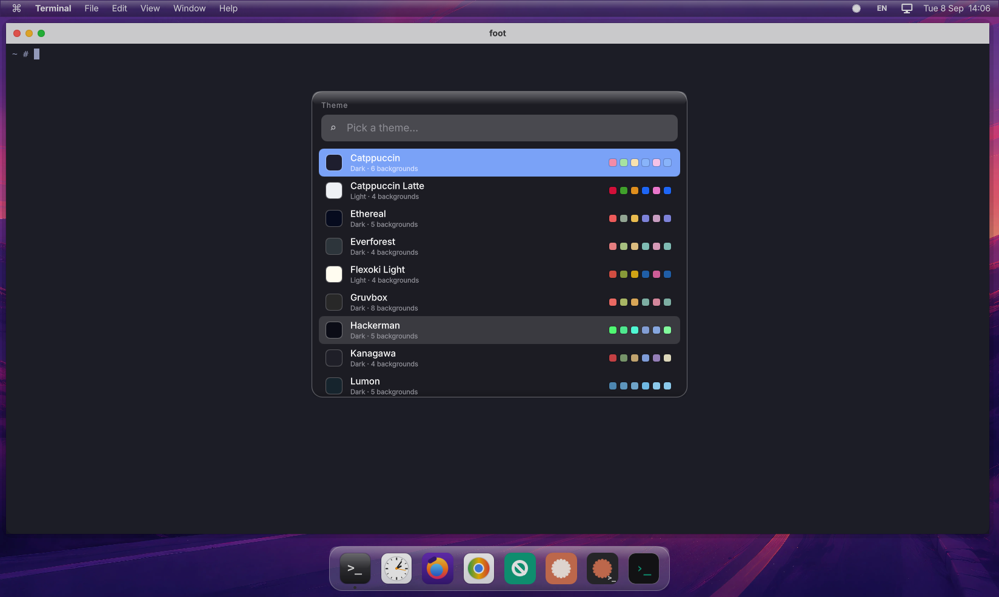

myLinux boots in a few seconds as a virtual machine on Apple silicon. It is a Qt 6 Wayland desktop with a macOS look and the keyboard workflow of Omarchy: tiling windows, a launcher on Option+Space, twenty theme packs. The only thing to install on the Mac is QEMU.

A purpose-built image, not a general distribution. The kernel and root filesystem load into memory at start; the things you change live on a separate apps disk.
| Build system | Buildroot 2026.08, this repository is the external tree |
| Target | arm64, Linux 6.18, glibc, busybox init, initramfs only |
| Graphics | virtio-gpu, Mesa llvmpipe, Qt 6.11 on eglfs_kms |
| Desktop | myshell, a QML Qt Wayland compositor, foot terminal, Inter font |
| Apps disk | Debian trixie arm64 with apt: Chromium, Firefox, Remmina, btop, git, Claude Code, Codex, Tailscale |
| Host | QEMU 11 from Homebrew, Hypervisor.framework, 9p shared folder, a myLinux.app bundle |
The system image is read-only and thrown away at shutdown. Your home directory, Debian packages, browsers and AI tools live on the apps disk, a sparse 16 GB file that the first boot sets up for you.
Update the image and nothing you installed is lost. Break the image and a restart gives you a clean one. The Mac clipboard flows in on its own; Option+Ctrl+C sends text the other way.
The gear in the menu bar keeps OpenRouter, Anthropic, OpenAI and Tailscale keys on the apps disk and exports them to every terminal, so Claude Code and Codex are ready without further setup.
The Mac Option key is Super inside myLinux, Cmd stays with macOS. The same fingers work on both systems. Option+K shows the full sheet, with search.
Requirements: an Apple-silicon Mac, macOS 15 or newer, Homebrew, and about 8 GB of free RAM for the virtual machine.
$ brew install qemu $ git clone https://github.com/adminmylinux/mylinux.git && cd mylinux $ tools/get-image.sh && ./run.sh
get-image.sh fetches the kernel and root filesystem of the latest release into out/ and checks their SHA-256.
run.sh wraps QEMU in myLinux.app, sized to the display under your pointer. A few seconds later the desktop is up.
The welcome dialog formats out/apps.img, installs Debian's minimal rootfs, the desktop apps, Claude Code and Codex. About 1.3 GB, a few minutes, once.
An account keeps a profile per machine so a fresh install on another Mac looks like the one you left: theme and background, keyboard layout, display scale, the apps that open at start, the Debian packages you added, and your notes.
# pull the profile "macbook" into the share folder $ curl -H "Authorization: Bearer mlx_…" \ https://mylinux.app/api/machines/macbook/ini \ -o share/mylinux.ini # push what this machine uses now $ curl -X PUT --data-binary @share/mylinux.ini \ -H "Authorization: Bearer mlx_…" \ https://mylinux.app/api/machines/macbook/ini